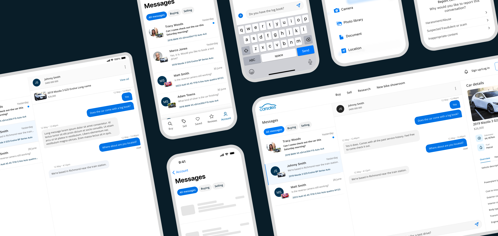
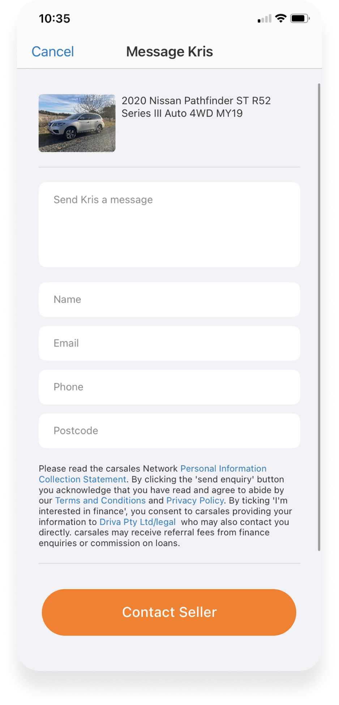
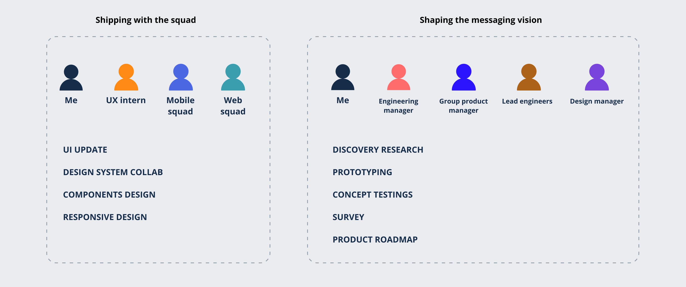
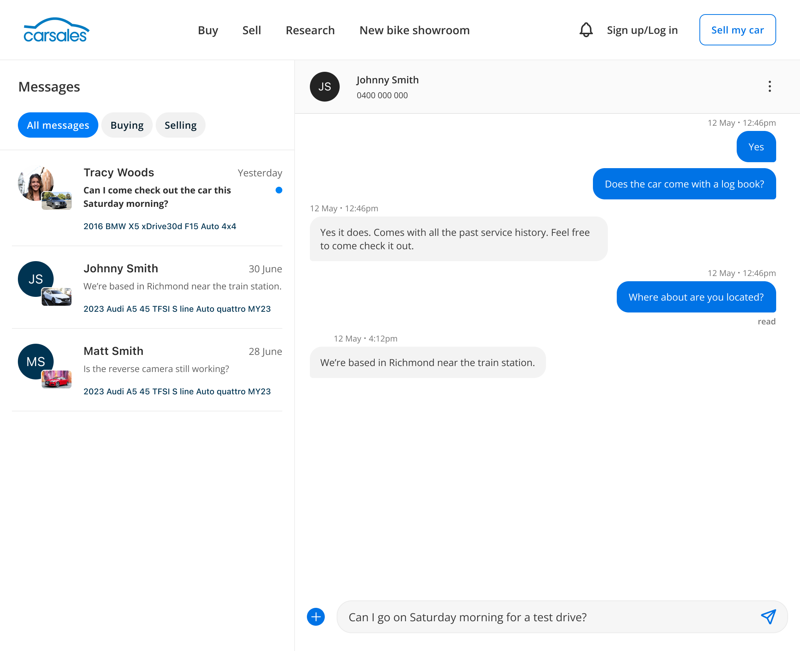
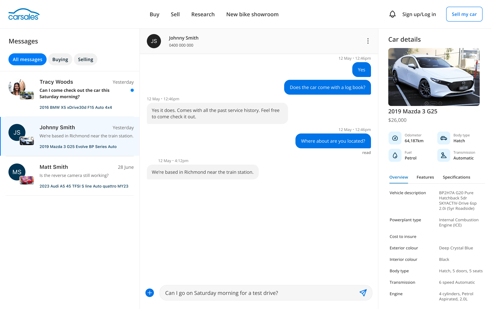

From enquiry forms to real-time chat
I redesigned how buyers and sellers talk on Australia's largest car marketplace, and turned the research into a roadmap the business backed with a dedicated team.

01. The problem
Conversations got lost in email
Buying a car on Carsales started with an enquiry form. Once you sent it, the conversation moved to email, and buyers and sellers were left digging through their inboxes to keep track of it.
Engineering had already started building messaging and had a first draft of the components. What the team needed was direction: what to build, in what order, and why.
Three opportunities shaped the work
Real-time conversations. Buyers and sellers can talk at their own pace without leaving Carsales.
A foundation for the whole transaction. Chat could later carry test drives, locations, contracts and payments.
Keeping up with competitors. Facebook Marketplace and Gumtree already had messaging, but they are less safe places to buy a car. Carsales could offer the convenience with more trust.

02. Leading the work
Two tracks at once
Shaping the direction. With the Group Product Manager, Engineering Manager, lead engineers and Design Manager, I ran discovery research, prototyped concepts, tested them and validated the findings with a survey. Together we turned that into the product roadmap.
Shipping the craft. With a UX intern and the mobile and web squads, I uplifted the existing UI while engineering worked on the back end. I also worked with the design system team so the new messaging components matched the wider Car Group brand.

03. Design decisions
Step 1: UI uplift
I rebuilt the existing screens as components that follow the Carsales design system. Where messaging needed something the system didn't have, such as chat bubbles, failed-message states and status colours, I collaborated with the design system team to create custom components and added them alongside it.

One inbox, not two
Separate Buying and Selling inboxes meant people missed messages, because they couldn't see new ones without switching tabs. Analytics showed that very few Carsales users buy and sell at the same time, so the second inbox was mostly getting in the way. Now all messages show by default, with quick filters for buying and selling.

Who before what
People recognise a chat in different ways. Some look for the car, others look for the person. Usability testing showed the name matters most here, so each card leads with the person's photo or initials. A small car thumbnail and the vehicle year and model sit underneath for context.

04. Responsive design
See more with a larger screen
The old design stretched one layout to fill the screen. Now, larger screens show more. On a medium screen, your messages sit beside the conversation. Go wider and a car details panel joins them, so buyers can check the car without leaving the chat.



05. The outcome
A roadmap the business invested in
Faster replies
I shaped the early product vision, before launch data existed. We projected that instant messaging would cut average response time by 60%, so sellers hear back sooner and feel more confident selling on Carsales.
A foundation for what's next
Because the work moved quickly, other teams could build on it: AI assist, payments, the app team and product listings.
A dedicated team
The research became six months of prioritised, design-ready work in Figma. The business saw the impact and gave the team dedicated resources.